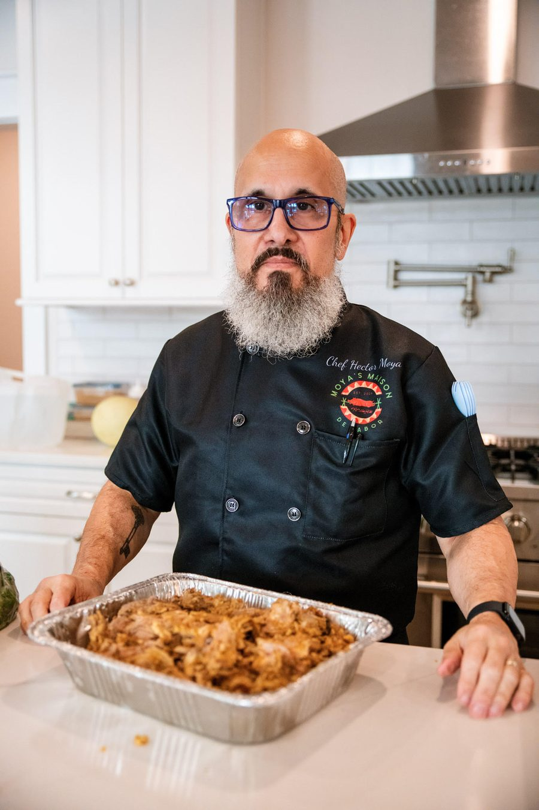
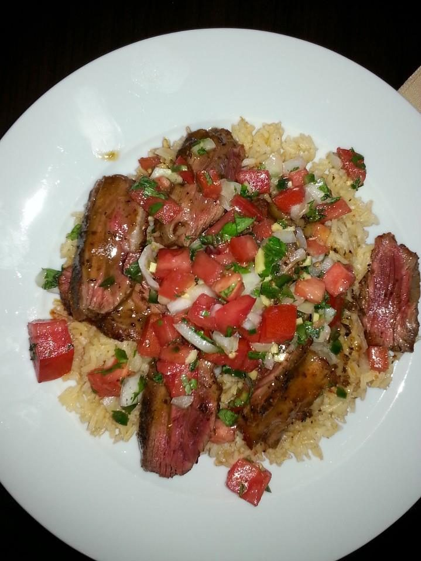

Chef Hector
Moya.
About Me
My culinary journey began at the age of five, standing beside my father in our family kitchen. My father was a chef in Cuba, and he taught me something that has stayed with me throughout my life: great cooking isn't just about ingredients or techniques—it's about love, family, and the memories we create around the table.
As a second-generation Cuban American chef, I have dedicated over 37 years to the culinary profession, blending the bold, soulful flavors of my Cuban heritage with the precision and elegance of classical French cuisine.
I am a proud graduate of Johnson & Wales University, but I often say that while culinary school taught me technique, my father taught me how to cook with my heart.
Throughout my career, I've had the privilege of cooking for an extraordinary range of guests, from intimate family gatherings and elegant weddings to corporate events and high-profile clientele, including George Foreman, Stevie Wonder, and the Washington Nationals.
Today, as the Founder and Executive Chef of Moya’s Maison de Sabor, based in Spotsylvania, Virginia, I specialize in private dining, catering, personalized culinary experiences, and hands-on cooking classes.
My signature dish, Ropa Vieja, holds a special place in my heart. It was one of the first dishes my father taught me to prepare, and every time I make it, I honor his legacy and the traditions that shaped me.
What makes my cooking unique is my philosophy: Keep it simple, respect the ingredients, and let the flavors speak for themselves. I believe exceptional food doesn't need to be complicated. It needs to be prepared with patience, skill, authenticity, and passion.
For me, being a chef has never been just a profession. It's my way of connecting people, preserving traditions, and making everyone who sits at my table feel like family.
I am the chef I am today because of my father. His lessons are the foundation of everything I create.
At Moya’s Maison de Sabor, we don't just serve meals. We tell stories, celebrate cultures, and create unforgettable experiences—one plate at a time.
Taste the Tradition. Feel the Soul.
“There's always room for one more at my table!”
— Chef Hector Moya
My Services
Culinary Specialties
